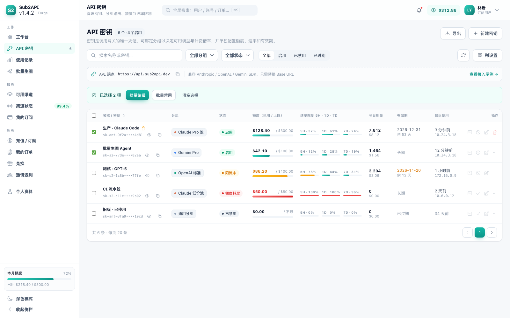
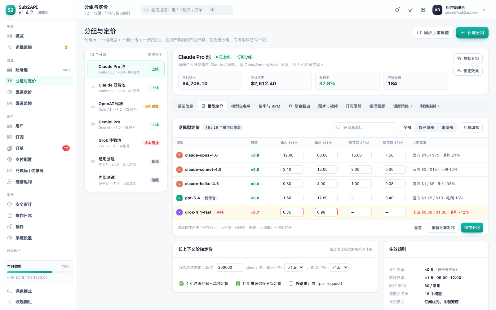
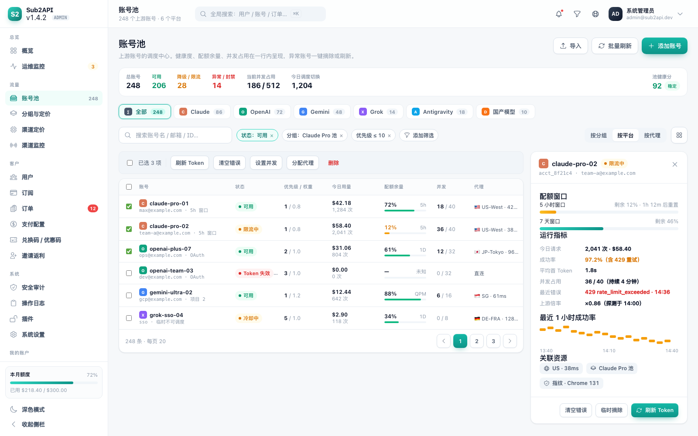
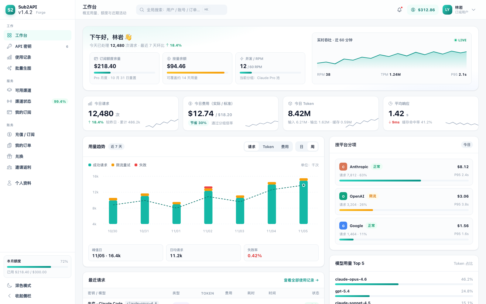
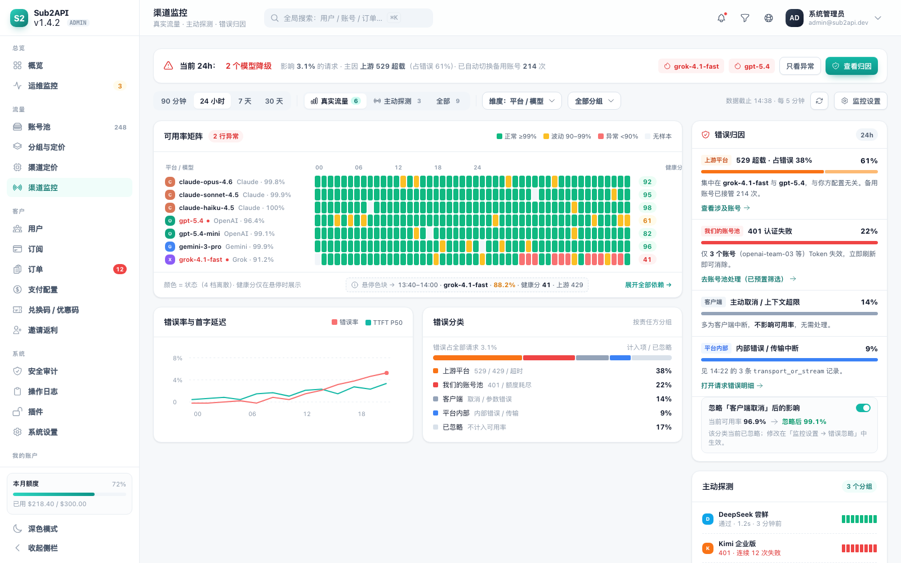
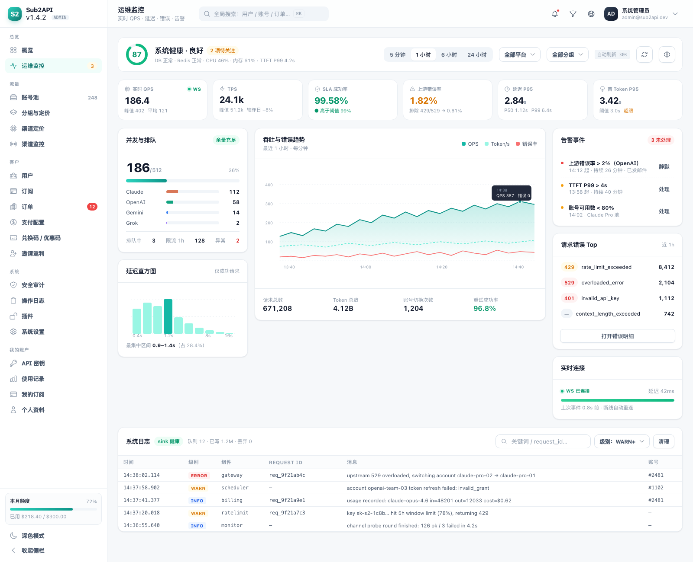
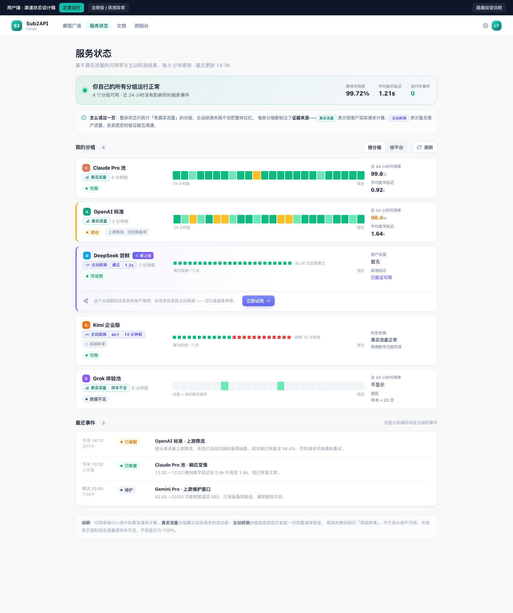

之前 13 个原型是分开的「点」。这条主线用一个真实对象——一次 API 请求——把它们串成链路： 走哪个分组 → 落在哪个账号 → 扣谁的钱 → 出什么事 → 谁看得见。 界面之所以这样组织，是因为业务的连接方式本来就长这样。
请求以谁的身份进来、受什么限制。分组是整条链路的分岔点——它同时决定计费、可用性和客户能看到什么。

这把密钥能用哪些模型、按什么价扣费、走到哪个上游。定价表上直接显示毛利，把定价与成本的关系前移到编辑现场。

请求实际落在哪个上游账号上——整条链路的物理执行点。账号失效、配额耗尽、代理异常都发生在这里。

每次请求落一条记录，同时产生三个数：实际费用（扣客户）、标准费用（体现节省）、上游成本（算毛利）。

把记录按「平台 / 分组 / 模型」聚合出可用率，再把 17 类错误归因成 4 个责任方——这是全套设计里最能体现价值的一环： 它把「不可用的现象」还原成「谁的责任、去哪个页面修」。

当归因是「平台内部」或上游持续异常，进入运维视角：实时 QPS、延迟分位、错误明细、告警与系统日志。

把 ⑤ 的结论按受众裁剪：客户只看到「我能不能用」以及凭什么这么说；管理员看毛利与待办；运维看错误与告警。

有客户流量的分组用真实流量（连续色条，teal）；没有流量的新分组用主动探测（离散点阵，靛蓝）。
正常 ≥99% / 波动 90–99% / 异常 <90% / 无样本。矩阵用离散色便于扫读，健康分作为连续值只在悬停时显示。
管理端的归因结论直接决定客户看到什么。账号池 Token 失效时，客户看到的是「可用」（已切备用），管理员看到的是待办。
| P0 | 设计令牌 + 4 个基础组件（KpiCard / StatusPill / PageHeader / ActionStrip） | 全站复用，后续每页都省时间 |
| P1 | ① 密钥 → ② 分组 → ③ 账号池 三页改造（主链路骨架） | 改动立刻被客户感知 |
| P2 | ⑤ 渠道监控：矩阵 4 档 + 归因卡 + 下钻 | 解决「3 秒定位」与「责任方」 |
| P3 | ⑦ 用户状态页：两种证据合并（需 `group_id` 迁移） | 客户透明度 + 新分组转化 |
| P4 | ⑤ 配置抽屉：绑定 / 聚合 / 阈值 | 依赖 P3 |
| P5 | ③ 运营概览重组（待办置顶） | 业务价值最高，但可收尾 |
一次请求从密钥出发，经分组定价决定「按什么价、走哪条路」，在账号池落地执行，产生计费与可用率两类数据； 可用率被归因成「谁的责任」，再按受众裁剪成三个版本——管理员看毛利与待办，运维看错误与告警， 客户只看到「我能不能用」以及凭什么这么说。